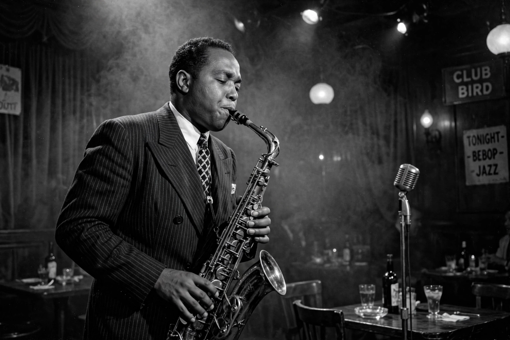

Charlie Parker
| Charlie Parker | |
 | |
| Birth name | Charles Parker Jr. |
|---|---|
| Born | August 29, 1920, Kansas City, Kansas, U.S. |
| Died | March 12, 1955 (aged 34), New York City, U.S. |
| Genres | Bebop, jazz |
| Occupation | Musician, composer |
| Instruments | Alto saxophone, tenor saxophone |
| Years active | 1937–1955 |
Charles Parker Jr. (August 29, 1920 – March 12, 1955), nicknamed "Bird" or "Yardbird", was an American jazz saxophonist, bandleader and composer. Parker was a highly influential soloist and leading figure in the development of bebop, a form of jazz characterized by fast tempos, virtuosic technique and advanced harmonies.
Parker was a blazingly fast virtuoso and introduced revolutionary harmonic ideas into jazz, including rapid passing chords, new variants of altered chords, and chord substitutions. Primarily a player of the alto saxophone, Parker's tone ranged from clean and penetrating to sweet and somber.
Early life
Parker was born in Kansas City, Kansas, and raised in Kansas City, Missouri, the only child of Charles Parker Sr. and Adelaide "Addie" Parker. He attended Lincoln High School and began playing saxophone at age 11, joining the school band. As a teenager he worked with local bands and studied under saxophonist Buster Smith.
Career
In 1939 Parker traveled to New York City, where he worked as a dishwasher at a restaurant where pianist Art Tatum performed. In the early 1940s he played with Jay McShann's band, making his first recordings. He soon joined Earl Hines's band alongside trumpeter Dizzy Gillespie, and the two became central figures in the after-hours jam sessions at clubs such as Minton's Playhouse in Harlem, where bebop was forged.
Parker's landmark recordings of the mid-1940s — including "Ko-Ko", "Ornithology", "Yardbird Suite", "A Night in Tunisia" and "Now's the Time" — established the bebop vocabulary. In 1947 he formed a classic quintet with trumpeter Miles Davis, pianist Duke Jordan, bassist Tommy Potter and drummer Max Roach. His 1949 recordings with strings, Charlie Parker with Strings, were among his most commercially successful.
Personal life and death
Parker struggled with heroin addiction throughout his adult life, which repeatedly disrupted his career. He died in New York City on March 12, 1955, at age 34, of lobar pneumonia complicated by a bleeding ulcer and the effects of long-term addiction. The coroner famously estimated his age as between 50 and 60.
Legacy
Parker's influence on jazz and on saxophonists from Sonny Stitt and Cannonball Adderley to Ornette Coleman and John Coltrane (see John Coltrane) is immeasurable. His compositions are standards, and "Bird lives!" became a famous piece of graffiti after his death. The New York nightclub Birdland was named in his honor. He was posthumously awarded the Grammy Lifetime Achievement Award in 1984.